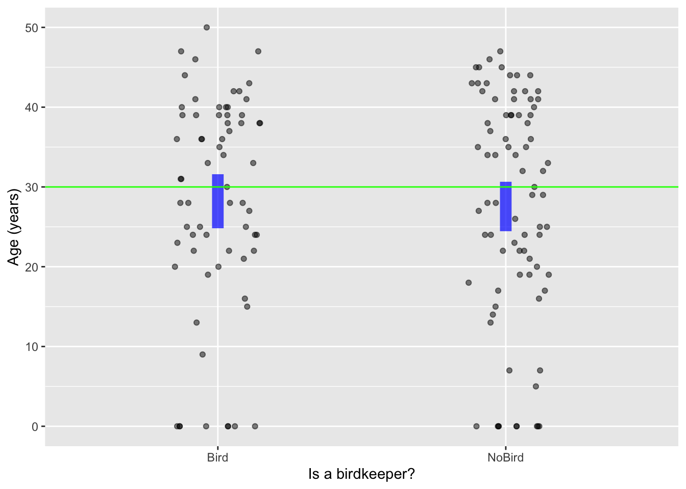
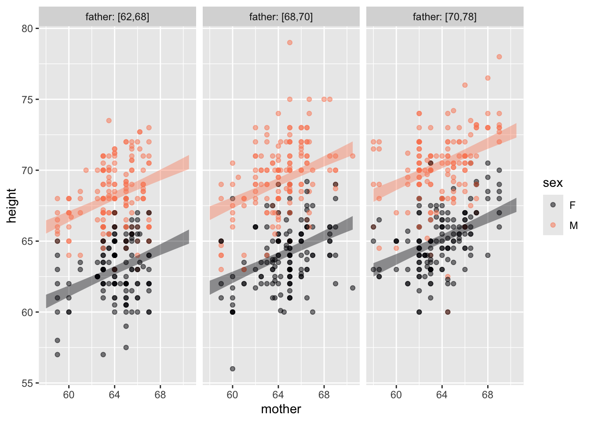

Birdkeepers |> point_plot(YR ~ LC, annot="model")4 Annotating point plots with a model
Lesson sec-variation-and-distribution introduced the violin-plot annotation to display graphically the “shape” of variation: which values are more common, which values rare, and which values never seen at all. In this Lesson, we turn to a completely different sort of annotation showing a “statistical model.” Models provide a way to summarize quantitatively the relationships among variables.
Simple models
We define a “simple model” as a model with a single explanatory variable. We will be using simple models frequently, but also models with more than one explanatory variable. (All the models we consider in these Lessons have a single response variable.) To illustrate, let’s return to the anthropometric measurements displayed in Figure fig-wrist-ankle where the explanatory variable is ankle circumference. Adding a statistical model annotation is accomplished by using the argument annot = "model":
Anthro_F |> point_plot(Wrist ~ Ankle, annot = "model")
Wrist ~ Ankle point plot with a statistical model.
The model annotation is drawn as a more-or-less straight band, shaded blue, to help distinguish it from individual data points. By default, point_plot() looks for a “linear” pattern in the data; the band is straight because we asked for it to be straight. The particular band presented by point_plot() is the one that comes as close as possible to the data points. “As close as possible” is defined in a specific way which we’ll investigate later; for now it suffices to note that the band goes nicely through the cloud of data points.
The explanatory variable in Figure fig-wrist-ankle-annot is quantitative. Model annotations can also be drawn for categorical explanatory variables. To illustrate, consider the data in Birdkeepers, used in a study of smoking, bird-keeping, and lung cancer. The unit of observation is an individual person. The variable YR records the number of years that person smoked, while the categorical variable LC indicates whether the person had been diagnosed with lung cancer. The data and a model annotation are shown in Figure fig-birdkeepers-A

For a categorical explanatory variable, the model annotation is a vertical band (or “interval”) for each of the categorical levels. As with the band Figure fig-wrist-ankle-annot, the model annotation in Figure fig-birdkeepers-A is vertically centered among the data points.
In later Lessons, we will discuss how point_plot() chooses the specific model annotation shown in any given case. But consider these closely related questions:
- Why are the model annotations shown as a band or interval, rather than as a single, simple line or single numerical value for each category?
- What do the model annotations tell us?
The bands or intervals in the model annotations shown by point_plot() are there as a reminder that the data are consistent with a range of models. The height of the band/interval shows how large is that range. This is essential to drawing conclusions from the plots. For instance, in Figure fig-birdkeepers-A, the intervals for two levels “lung cancer” and “no cancer” have no vertical overlap. This tells the statistical thinker to be confident in a claim that the typical value of YR is genuinely different between the two levels. If the intervals had overlapped vertically, the statistical thinker would know to be skeptical about such a claim.
Similarly, in Figure fig-wrist-ankle-annot the model annotation is a sloping band. The slope indicates that Ankle and Wrist are related to one another: larger Wrists tend to go along with larger Ankles. If the two variables were unrelated, we would expect the band to run horizontally—zero slope—meaning that the typical wrist circumference is the same for all people, regardless of the ankle circumference. The vertical thickness of the band tells the statistical thinker a range of plausible slopes that match the data. In Figure fig-wrist-ankle, there is no horizontal line that can be drawn from end to end within the band. Thus, the statistical thinker can be confident that there is a non-zero slope describing the relationship between Wrist and Ankle.
You may have encountered statistical graphics similar to those in Figure fig-point-estimate but with an essential difference, the model annotations are lines rather than bands or intervals. In Figure fig-point-estimate, the model annotations are simple lines that in principle are infinitely thin. With a numerical explanatory variable, the model annotation is a line that can have a non-zero slope. In contrast, for a categorical explanatory variable, there is a horizontal line drawn at a single vertical value for each level of the explanatory variable. Such simplified graphics do not recognize that, in reality, there is a range of different lines that are plausible models. Since we can’t tell from graphics like Figure fig-point-estimate what is the range of plausible models, the annotation provides no guidance about whether to be confident that the data tell us slopes or vertical differences are non-zero.
Statistical thinking makes extensive use of the concept that there is a range of plausible models consistent with the data. Any straight line that falls into the band in Figure fig-wrist-ankle is a plausible model of the data. In Figure fig-birdkeepers-A, any pair of values that fall into vertical intervals are a plausible model of the data.


point_plot().
“Trend” or “cause”
Each of the plausible models—as in Figures fig-wrist-ankle-annot or fig-birdkeepers-A—describes a specific relationship between the response and explanatory variables. For the wrist/ankle relationship, the plausible models all show a “trend” between ankle size and wrist size. For the smoking-years/lung-cancer relationship, the people with lung cancers “tend” to have smoken for more years than the no-cancer people.
The words “trend” or “tend” are weak. Often, statistical thinkers are interested in stronger statements, like these:
- Larger ankles cause larger wrists.
- Smoking for more years increases the chances of lung cancer.
We can call these opinionated statements because they make use of some hypothesis about how the world works held by the modeler rather than being forced solely by the data. Many people think it silly to claim that “larger ankles cause larger wrists.” It seems much more probable that “larger people have larger wrists and also larger ankles.” On the other hand, many people will be sympathetic to the statement “increases the chances of lung cancer.” They have heard such things from other respected sources.
Some of the techniques covered in these Lessons are designed to substantiate or undermine opinionated statements like these. Until we understand and use these techniques, it is dicey to quantitatively support an opinionated statement from data.
Many statisticians prefer to avoid the whole matter of opinionated statements. But see Lesson sec-experiment for an approach approved by even the most opinion-wary statistician. Weak, unopinionated language like “trend” or “tend” are used instead. Those preferring more technical-sounding language might use “associated with” or “correlated with.”
Independence
We use model annotations to display whether variables are related. It’s good to consider as well a particular type of relationship: independence. When the explanatory variable is categorical, the model annotations will be a vertical interval for each level. When the response is independent of the explanatory variable, those intervals will overlap. For instance, in Figure fig-independence(a) values of YR near 30 are in both vertical intervals.
For a quantitative explanatory variable, as in Figure fig-independence(b), independent variables will have a model band that is more-or-less horizontal. That is to say, at least one horizontal line will fall within the band.

Birdkeepers is independent of whether the person keeps a bird. Panel (b), based on Anthro_F is about the possible relationship between a person’s height and body fat as a percent of overall mass
Multiple explanatory variables
In Lesson sec-point-plots we used color and faceting to look at the response variable in terms of up to three explanatory variables. Statistical models can also handle multiple explanatory variables.
We’ll illustrate with a commentary from a political pundit about education spending in US schools:
[T]he 10 states with the lowest per pupil spending included four — North Dakota, South Dakota, Tennessee, Utah — among the 10 states with the top SAT scores. Only one of the 10 states with the highest per pupil expenditures — Wisconsin — was among the 10 states with the highest SAT scores. New Jersey has the highest per pupil expenditures, an astonishing $10,561, which teachers’ unions elsewhere try to use as a negotiating benchmark. New Jersey’s rank regarding SAT scores? Thirty-ninth… The fact that the quality of schools… [fails to correlate] with education appropriations will have no effect on the teacher unions’ insistence that money is the crucial variable.—–George F. Will, (September 12, 1993), “Meaningless Money Factor,” The Washington Post, C7.
The opinionated claim here is that “money is the crucial variable” in educational outcomes. George Will seeks to rebut this claim with data. Fortunately for us, actual data on SAT scores and per pupil expenditures in the mid-1990s is available in the mosaicData::SAT data frame. The unit of observation in SAT is a US state. Figure fig-SAT-one(a) shows an annotated point plot of state-by-state expenditures and test scores. The trend signaled by the model annotation is that SAT scores are slightly lower in high-expenditure states, consistent will George Will’s observations. But …

Education is a complicated matter and there are factors other than expenditures that may be playing a role. One of these, shown in Figure fig-SAT-one(b), is that participation in the SAT varies substantially from state to state. In some states, almost all students take the test. In others, fewer than 10% of students take the test. The data show a relationship between participation and scores: scores are consistently higher in low-participation states.
SAT |> point_plot(expend ~ frac, annot="model") |>
add_plot_labels(x ="Participation (%)", y = "Per pupil expenditures ($1000s)")Statistical modeling techniques enable us to use both expenditures and participation as explanatory variables. Figure fig-SAT-one does this with one variable at a time. But we can also use both explanatory variables simultaneously. Doing so is important especially when there is a relationship between the explanatory variables, as seen in the graph of expenditures versus participation (Figure fig-expend-partic).


The two panels in Figure fig-SAT-expend-partic tell a consistent story, but with different graphical appearances. For instance, the clear vertical spacing between bands in the left panel indicate that SAT scores are influenced by the participation level, even taking into account expenditures. This appears as the downward slope in the bands in the right panel.
But when we look at expenditures—taking into account participation—we see horizontal bands in the left panel. (More precisely, bands that can encompass a horizontal line.) This indicates that we cannot confidently claim that expenditures are associated with SAT scores. In the right panel, the lack of association between expenditures and SAT scores is signaled by the vertical overlap between the bands.
Many people are discomfitted to hear that looking at the same data in different ways can lead to different conclusions. At this stage in the Lessons that may be true for you as well. Even so, should should already have a concrete sense of how we can denote the “different ways of looking at data.” In modeling notation, the perspective sat ~ expenditures shows one pattern, while the perspective sat ~ expenditures + participation tells another. In Lesson sec-effect-size we will see a non-graphical way of looking at models that makes it easier to see the effect of one explanatory variable in the context of others. And in Lessons sec-DAGs and sec-experiment we will study the methods used in modern statistics to decide which of two possible models—say sat ~ expenditures or sat ~ expenditures + participation—is more appropriate to answer questions of causation.
Exercises
Exercise 4.1 Q04-100
Exercise 2.2 showed the following point plot of auction price for antique clocks, as a function of age and the number of bidders.
Clock_auction |> point_plot(price ~ bidders + age) 
You might or might not be able to discern from the above plot the pattern of how age affects price.
Now redraw the point plot on your own, but using the annotation annot = "model". The annotations show the statistical properties of the data.
The annotations should guide your eye to the pattern among age, number of bidders, and price? What do the annotations show? Answer: price increases along with the number of bidders. (That’s what competition will do!) But price also increases along with the age of the clock: the bands for the older clocks are higher in price than for less old clocks.)
Exercise 4.2 monkey-bit-piano
The statistical annotations created by point_plot() always extend vertically over an interval (or “band”). Traditionally, statisticians have distinguished between two types of statistics:
- point statistics are a single number.
- interval statistics such as produced by
point_plot()
Often, interval statistics are drawn using an I-beam shape called an “error bar” while point statistics are drawn with a point or a horizontal line.
Warning: Removed 120 rows containing missing values (`geom_point()`).Warning: Removed 120 rows containing missing values (`geom_point()`).Warning: Removed 119 rows containing missing values (`geom_point()`).


For each graph, state which types of graphical layers appear.
Answer: (a) point statistic layer; Answer: (b) interval layer; Answer: (c) data layer; Answer: (d) data and interval layers; Answer: (e) point statistic and interval layers; Answer: (f) three layers: data, point statistic, and interval;
Exercise 4.3 Q04-101
The annotated point plots that follow are each based on the Anthro_F data frame. Your task for each is to use the model annotation to judge whether the explanatory variable mapped to x is independent of the response variable.


Plot (a): Answer: The response (BFat, mapped to y) is not independent of the variable mapped to x (Wrist). No horizontal line can be threaded through the annotation band.
Plot (b): Answer: Not independent.
Plot (c): Answer: Independent. A horizontal line can easily be placed within the model annotation.
Plot (d): Answer: Not independent
Plot (e): Answer: Not independent
Plot (f): Answer: Not independent
Plot (g): Answer: Not independent
Plot (h): Answer: Not independent. The negative slope of the band means that BFat tends to be lower in taller people.
Plot (i): Answer: Not independent.
Exercise 4.4 Q04-102
The annotated point plot shows the heights of fully-grown children as a function of their mother’s and father’s heights and of the child’s sex. That is, there are three explanatory variables: mother (mapped to x), sex (mapped to color), and father (mapped to facet).
Galton |> point_plot(height ~ mother + sex + father, annot="model")
According to the model, the child’s height increases with both mother’s height and father’s height, and is different between the sexes.
A. What aspect of the model annotation indicates that child’s height is not independent of mother’s height? Answer: The horizontal axis is mother’s height. The annotations slope upward, indicating that child’s height increases with mother’s height. If child’s and mother’s heights were independent, the annotations would be more-or-less horizontal.
B. What aspect of the model annotation indicates that child’s height is not independent of child’s sex? Answer: The annotation bands for the different sexes do not overlap, the M annotation is higher than the F annotation. If child’s height and sex were independent, the annotation bands would overlap.
Note: The child’s height also is not independent of father’s height. This is hard to see at a glance. But if you look carefully, and refer to the tick marks on the y axis, you can see that both the F and M bands in the second facet are higher than in the first, and similarly between the third and second facet.
C. Redraw the annotated point plot, but this time map father to color and sex to facet. Do you see a clear separation between the bands for different height fathers?
Answer: Within each sex the different father-height bands do not overlap. There is an illusion, however when it comes to sex. Note that the bands in the female facet align almost seamlessly with the corresponding bands in the male facet. This can suggest at first glance—wrongly—that the bands are at the same height. In fact, each of the male bands is substantially higher than the corresponding female band.